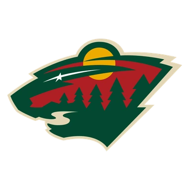
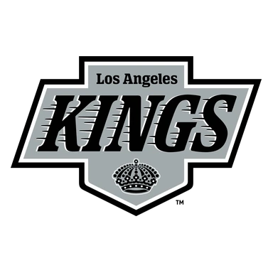

Сан-Хосе — Нэшвилл итог матча 16 ноября
Расчёт модели до матча
- 2,5 : 3,6ожидаемые голы
- 56 %тотал больше 5,5
Цифры считает модель по данным сайта, а не эксперт. Это вероятности, а не гарантия исхода. Как считает модель · словарь терминов.
Статистика матча
- 24Броски в створ34
- 0 из 2Голы в большинстве1 из 3
- 8Штрафные минуты6
- 42 %Выигранные вбрасывания58 %
- 23Силовые приёмы23
- 16Блокированные броски11
- 5Отборы3
- 17Потери14
Удаления по минутам 7
- 1-й период
- Ross ColtonГрубость2 мин
- Darnell NurseГрубость2 мин
- Darnell NurseБлокировка2 мин
- 2-й период
- Macklin CelebriniТолчок клюшкой2 мин
- Shane WrightПодножка2 мин
- 3-й период
- Alexander KerfootУдар клюшкой2 мин
- Michael MisaЗадержка соперника2 мин
Данные лиги.
- ТурнирНХЛ
Коротко о матче
Сан-Хосе — Нэшвилл 4:2: хозяева победили. Модель до игры считала самым вероятным исходом победу гостей (52 %) — на этот раз вышло иначе.
Главное перед игрой — серия: Нэшвилл — 7 побед подряд. По форме разница была заметной: в пяти последних матчах Нэшвилл — 5 побед, Сан-Хосе — 2 победы. Слабое место — оборона: Сан-Хосе — в среднем 3,6 пропущенной шайбы за игру в этих пяти матчах.
До этого команды встречались 14 апреля 2026 года: Нэшвилл — Сан-Хосе 2:3.
Форма: последние матчи
 Сан-Хосе 2 победы из 5
Сан-Хосе 2 победы из 5

П1:4 П3:4
П3:4 В3:2
В3:2 П2:3
П2:3 В6:5
В6:5
 Нэшвилл 5 побед из 5
Нэшвилл 5 побед из 5
 В3:2
В3:2 В3:1
В3:1
В3:0 В4:2
В4:2 В3:2
В3:2
Личные встречи
- Нэшвилл2:3Сан-Хосе
- Сан-Хосе3:6Нэшвилл
- Нэшвилл6:3Сан-Хосе
- Сан-Хосе2:3Нэшвилл
- Сан-Хосе5:6Нэшвилл
- Нэшвилл7:5Сан-Хосе
Положение в таблице
| Команда | Место | И | В | П | Голы | Очки |
|---|---|---|---|---|---|---|
| 10 | 23 | 10 | 13 | 63:81 | 22 | |
| 5 | 21 | 11 | 10 | 64:59 | 27 |
Другие матчи НХЛ в этот день
Куда дальше
Материалы носят информационный характер и не гарантируют результат. Реклама букмекеров на сайте не размещается. Сайт только для совершеннолетних (18+).